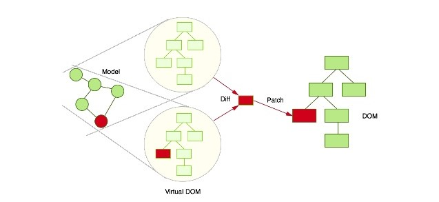

React Workshop
Qu'est-ce que c'est ?
- librairie JS
- créé en 2011
- par Jordan Walke de Facebook
- qui gère la partie vue d'une application
(=> le V de MVC)
Historique
- 2011: déploiement sur facebook
- 2012: déploiement sur Instagram
- 2013: première release open-source
- ...
Concepts
- DOM virtuel
- orienté composant
Virtual DOM
=> performances
Virtual DOM dans React
=> performances ++
Orienté composant
- props
- state
- cycle de vie
- JSX (gulp, grunt, webpack...)
Live coding 1
Mon premier composant